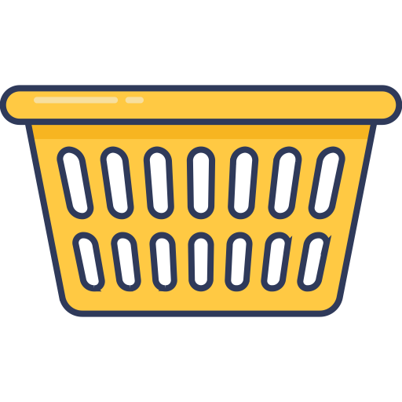

<ion-header>
  <ion-toolbar>
    <ion-title>basket</ion-title>
  </ion-toolbar>
</ion-header>

<ion-content>
  <div id="container">
    <p>Please add item(s) to laundry basket</p>
    
  </div>

  <ion-fab slot="fixed" vertical="bottom" horizontal="end">
    <ion-fab-button>
      <ion-icon name="add-outline"></ion-icon>
    </ion-fab-button>
  </ion-fab>
</ion-content>
